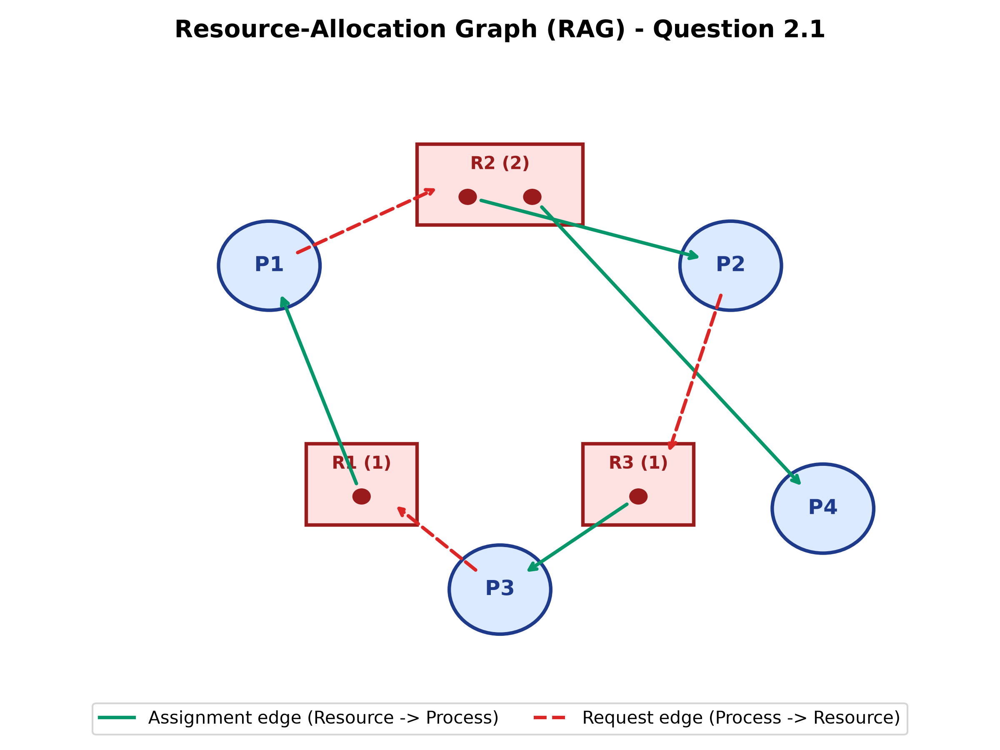
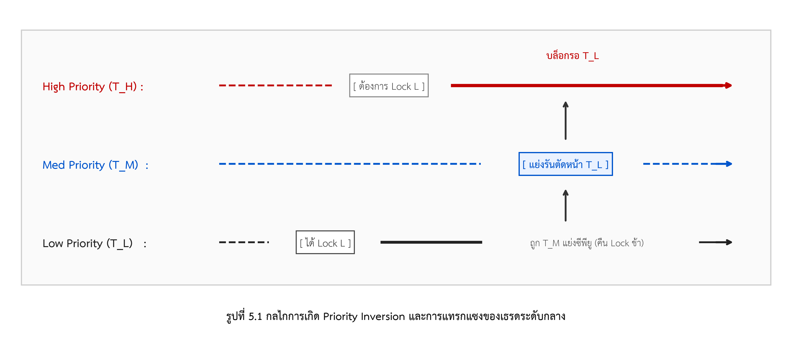
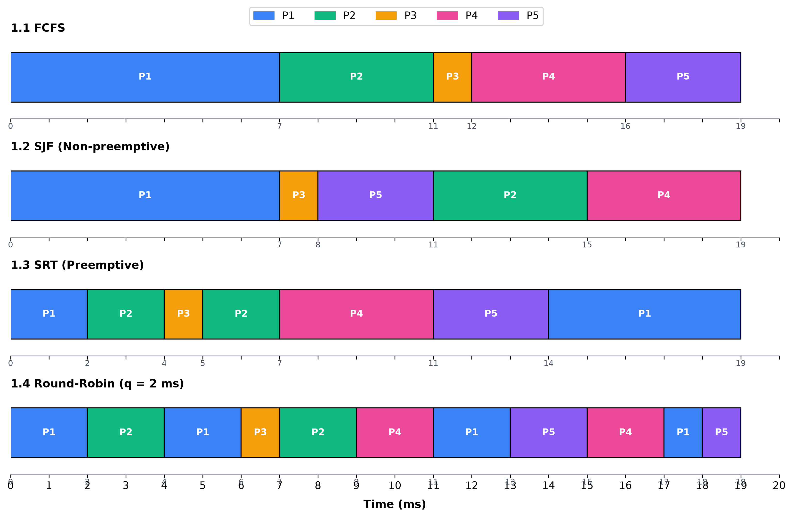
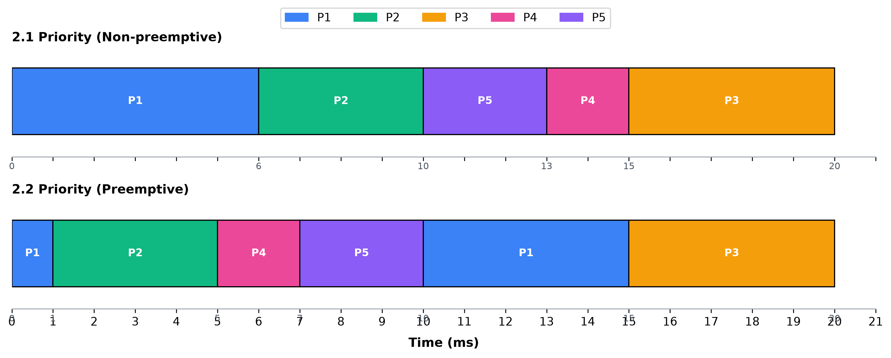
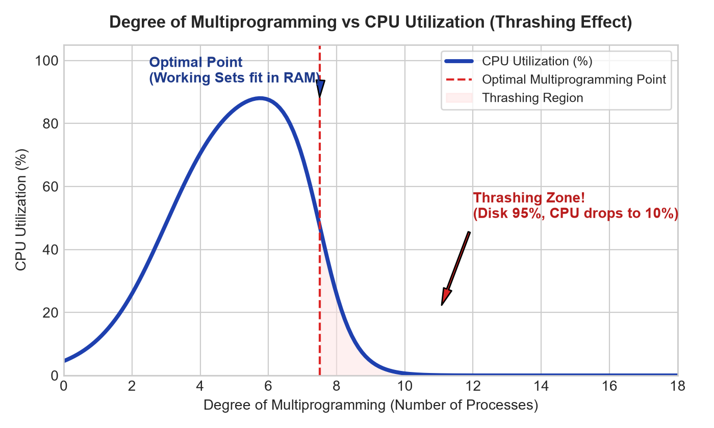
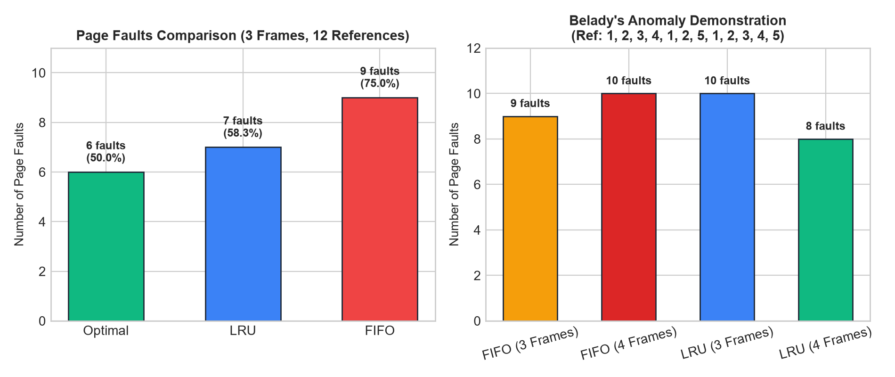
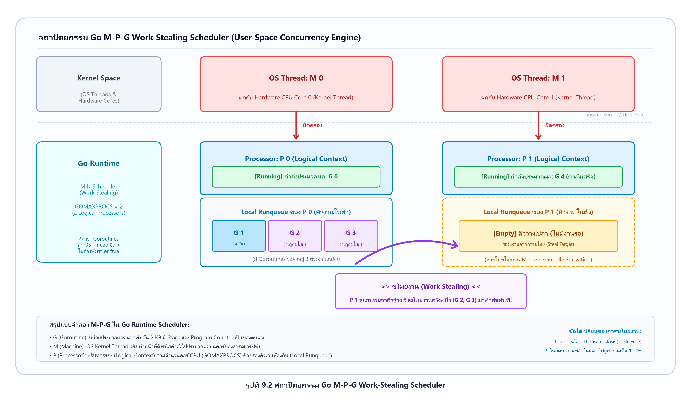
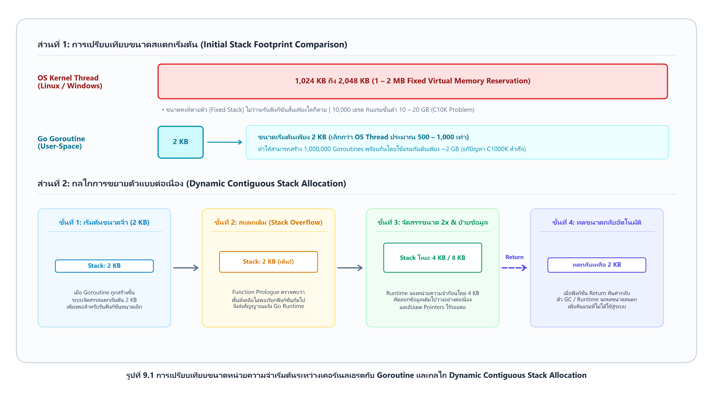
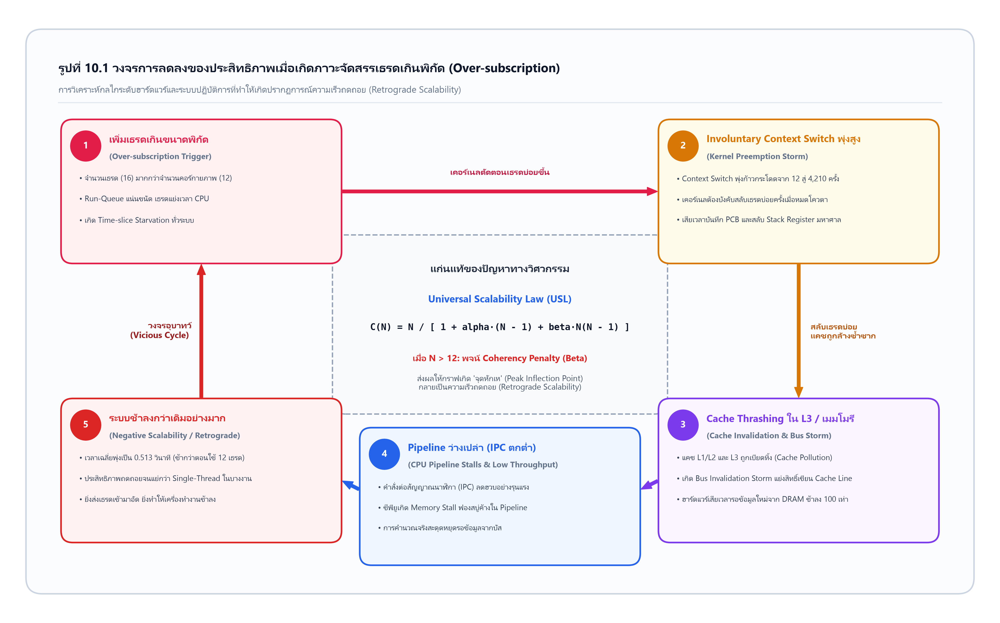
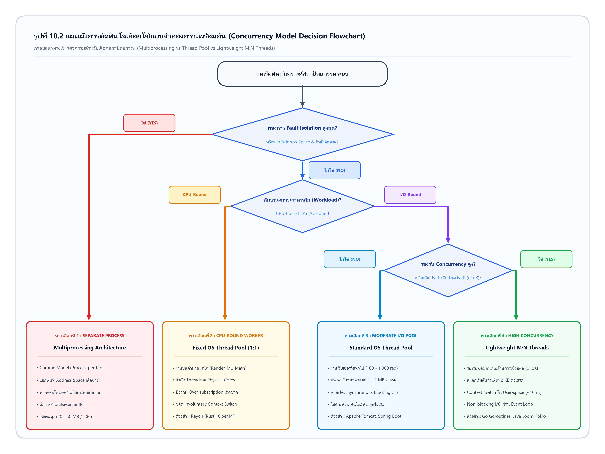

ภาพรวมและสูตรคำนวณลัด (Quick Cheatsheet)
สูตรคำนวณสำคัญ นิยามตัวแปร และเกณฑ์การประเมินที่ต้องจำเข้าห้องสอบอย่างแม่นยำ
การคำนวณเวลาจาก Gantt Chart สำหรับแต่ละโปรเซส Pi:
สูตรคำนวณเวลาเข้าถึงหน่วยความจำจริงเมื่อมีแคชฮาร์ดแวร์ TLB:
α ≥ (t_miss - EMAT_target) / (t_miss - t_hit)
ความสัมพันธ์ของเวกเตอร์และเมทริกซ์ในการหลีกเลี่ยง Deadlock:
การแบ่งบิตแอดเดรสตรรกะขนาด m บิต เมื่อ Page Size = 2n ไบต์:
| หัวข้อ / กลไก | ข้อดี (Advantages) | จุดอ่อน / ข้อจำกัด (Pitfalls) | ความเสี่ยง / ปัญหาเฉพาะตัว |
|---|---|---|---|
| Banker's Algorithm | รับประกัน Safe State แน่นอน 100% ป้องกันไม่ให้ระบบตกสู่ภาวะ Deadlock | โปรเซสต้องระบุทรัพยากรสูงสุดล่วงหน้า (Max Claim) ซึ่งในระบบจริงทำได้ยากมาก | Overhead มหาศาลระดับ O(m × n2) ทุกครั้งที่มี System Call ขอทรัพยากร |
| SJF / SRTF Scheduling | ให้ค่า Average Waiting Time ต่ำที่สุดตามหลักคณิตศาสตร์ (Optimal) | ไม่สามารถทราบ CPU Burst Time ที่แท้จริงล่วงหน้าได้ ต้องใช้การประมาณการแบบสถิติ | โปรเซสที่ใช้เวลาทำงานยาวนานจะเกิดปัญหา Starvation (แก้ไขด้วยเทคนิค Aging) |
| Round Robin (RR) | ตอบสนองผู้ใช้รวดเร็ว (Fairness & Good Response Time) ป้องกันปัญหา Starvation สมบูรณ์ | ถ้ากำหนด Time Quantum สั้นเกินไปจะเกิด Context Switch Overhead สูงมหาศาล | ถ้า Time Quantum ยาวเกินไป พฤติกรรมจะกลายสภาพเป็น FCFS |
| Paging with TLB | ขจัดปัญหา External Fragmentation ได้อย่างหมดจด ย้ายหน้าได้อย่างอิสระ | เกิด Internal Fragmentation ในหน้าสุดท้าย และต้องใช้แรมเก็บ Page Table ขนาดใหญ่ | TLB Miss ส่งผลให้ต้องเข้าถึง RAM เพิ่มขึ้นสองเท่า EMAT ช้าลงชัดเจน |
| FIFO Page Replacement | เข้าใจง่าย โครงสร้างคิวไม่ซับซ้อน Overhead ในการจัดการต่ำ | ไม่สนใจความถี่ของการใช้งาน อาจสลับหน้าที่กำลังใช้อยู่ออกไปจากแรม | เกิดปรากฏการณ์ Belady's Anomaly (เพิ่มจำนวนเฟรม แต่ Page Faults กลับเพิ่มขึ้น) |
| LRU Page Replacement | ประสิทธิภาพใกล้เคียง Optimal Page Replacement และไม่เกิด Belady's Anomaly แน่นอน | ต้องการฮาร์ดแวร์พิเศษคอยสนับสนุน (เช่น Logical Clock Counter หรือ Stack) มี Overhead ทุกครั้งที่อ่านเมมโมรี | การบำรุงรักษา Stack หรือ Timestamp ในทุก Memory Reference มีต้นทุนทางสถาปัตยกรรมสูง |
บทที่ 5 : ภาวะติดตาย (Deadlock)
เงื่อนไขจำเป็น 4 ประการ, กราฟจัดสรรทรัพยากร (RAG), Banker's Algorithm และเทคนิคการตรวจจับและกู้คืน
Deadlock จะเกิดขึ้นได้ก็ต่อเมื่อมีเงื่อนไขทั้ง 4 ข้อนี้เกิดขึ้น พร้อมกันในเวลาเดียวกัน (Simultaneously) เท่านั้น หากขาดข้อใดข้อหนึ่งไป ระบบจะไม่มีทางเกิด Deadlock ได้เลย:
- 1. Mutual Exclusion (การไม่เกิดร่วมกัน): มีทรัพยากรอย่างน้อย 1 ประเภทที่เป็น Non-shareable ในขณะใดขณะหนึ่ง โปรเซสใช้งานได้เพียงตัวเดียวเท่านั้น (เช่น เครื่องพิมพ์, สิทธิ์การเขียนไฟล์)
- 2. Hold and Wait (การถือครองและรอคอย): โปรเซสกำลังถือครองทรัพยากรอย่างน้อย 1 ตัว และกำลังรอคอยทรัพยากรอื่นเพิ่มเติม ซึ่งทรัพยากรนั้นกำลังถูกโปรเซสอื่นถือครองอยู่
- 3. No Preemption (การไม่สามารถยึดทรัพยากรคืนได้): ทรัพยากรไม่สามารถถูกบังคับยึดคืนกลางคันได้ ผู้ถือครองต้องปล่อยคืนอย่างสมัครใจเมื่อทำงานเสร็จสิ้นเท่านั้น
- 4. Circular Wait (การรอคอยแบบเป็นวงรอบ): เกิดลำดับโปรเซส { P0, P1, ..., Pn } โดยที่ P0 กำลังรอทรัพยากรจาก P1, P1 รอจาก P2 จนถึง Pn กำลังรอทรัพยากรที่ P0 ถือครองอยู่
• ทำลาย Mutual Exclusion: ใช้ Spooling กับเครื่องพิมพ์ (โปรเซสเขียนงานลงดิสก์แทนที่จะแย่งเครื่องพิมพ์ตรงๆ)
• ทำลาย Hold and Wait: บังคับให้โปรเซสขอทรัพยากรทั้งหมดที่จำเป็นตั้งแต่แรก หากไม่ได้ครบจะไม่ให้เริ่มทำงาน (ข้อเสีย: เปลืองทรัพยากรและเสี่ยงต่อ Starvation)
• ทำลาย No Preemption: หากขอเพิ่มแล้วไม่ได้ ให้ระบบบังคับริบทรัพยากรเดิมที่ถืออยู่คืนส่วนกลางทันที
• ทำลาย Circular Wait: กำหนดหมายเลขลำดับทรัพยากร (Global Ordering) และบังคับให้ขอตามลำดับจากน้อยไปมากเท่านั้น
แบบจำลองกราฟทิศทางแสดงความสัมพันธ์ระหว่างโปรเซส (วงกลม) และทรัพยากร (สี่เหลี่ยม โดยมีจุดกลมภายในแทนจำนวนหน่วย Instance):
- Request Edge (Pi → Rj): โปรเซส Pi กำลังร้องขอทรัพยากร Rj (ลูกศรชี้เข้าขอบสี่เหลี่ยม)
- Assignment Edge (Rj → Pi): ทรัพยากร Rj ถูกจัดสรรให้ Pi ถือครองแล้ว (ลูกศรพุ่งออกจากจุดภายในสี่เหลี่ยม)

• Multiple Instances per Resource: การมี Cycle เป็นเพียงเงื่อนไขจำเป็น แต่ อาจไม่เกิด Deadlock เช่นในรูป 5.1 ทรัพยากร R2 มี 2 หน่วย โดยหน่วยหนึ่งถูกถือครองโดย P4 ซึ่งอยู่นอกวงรอบและไม่ได้รอใคร เมื่อ P4 ทำงานเสร็จแล้วคืน R2 ระบบจะสามารถจัดสรรต่อตามลำดับ P4 → P1 → P3 → P2 จนเสร็จสิ้นทุกตัว ไม่เกิด Deadlock!
• แต่ถ้าเพิ่มเส้นร้องขอ P4 → R3: P4 จะกลายเป็นส่วนหนึ่งของวงรอบใหม่ ทำให้ไม่มีโปรเซสใดรันจบได้เลย คราวนี้จะกลายเป็น Deadlock 100%
ใช้สำหรับ Deadlock Avoidance ในระบบที่มีทรัพยากรแบบ Multiple Instances ก่อนจะอนุมัติทรัพยากรให้โปรเซสใด ระบบจะจำลองว่า "ถ้าให้ไปแล้ว ระบบยังคงอยู่ในสถานะปลอดภัย (Safe State) หรือไม่" หากปลอดภัยจึงจะจัดสรรจริง หากไม่ปลอดภัยจะปฏิเสธคำขอและให้โปรเซสรอไปก่อน
ลองจินตนาการว่าเราเป็น "ผู้จัดการธนาคาร" ที่มีลูกค้า 5 คน (P0 ถึง P4) กำลังขอกู้เงินสร้างบ้าน:
- Max (วงเงินกู้สูงสุดที่ขอ): ลูกค้าแต่ละคนบอกไว้ล่วงหน้าว่า "บ้านหลังนี้ถ้าจะสร้างเสร็จ ต้องใช้เงินรวมเท่าไหร่"
- Allocation (เงินที่เบิกไปแล้ว): ตอนนี้ลูกค้าหยิบเงินจากธนาคารไปถือไว้ในมือคนละเท่าไหร่
- Need (เงินที่ยังขาดอยู่ = Max - Allocation): ลูกค้าต้องขอเงินเพิ่มอีกเท่าไหร่ ถึงจะสร้างบ้านเสร็จสมบูรณ์
- Available (เงินสดคงเหลือในตู้เซฟของธนาคาร): เงินกองกลางที่ธนาคารยังเหลือให้กู้ได้ในขณะนี้
1. ก้มดูเงินในตู้เซฟเราตอนนี้ (
Available)
2. กวาดสายตามองหาลูกค้าที่ "เงินที่ยังขาดอยู่ (Need) น้อยกว่าหรือเท่ากับเงินในเซฟเรา" (
Need ≤ Available)
3. พอเจอคนนั้น (เช่น P1) เราปล่อยกู้ให้เขาจนบ้านเสร็จ P1 จะ "คืนเงินทั้งหมดที่ถืออยู่ (Allocation) กลับเข้าตู้เซฟเรา" ทำให้ตู้เซฟเรามีเงิน "เยอะขึ้นกว่าเดิม!" (
Available ใหม่ = Available เดิม + Allocation)
4. เอาเงินกองใหญ่ขึ้นนี้ ไปช่วยลูกค้ารายถัดไปเรื่อยๆ จนกระทั่งสร้างบ้านเสร็จครบทุกคน → เรียกว่า "Safe State (ปลอดภัยแน่นอน 100%)"
| โปรเซส | Allocation (A, B, C) | Max (A, B, C) | Need = Max - Allocation | Available ณ เวลา T0 |
|---|---|---|---|---|
| P0 | 0, 1, 1 | 7, 4, 3 | 7, 3, 2 | Available = [2, 2, 1] (คำนวณจาก Total [10,6,8] ลบยอดแจก [8,4,7]) |
| P1 | 2, 0, 2 | 3, 2, 2 | 1, 2, 0 | |
| P2 | 3, 1, 3 | 9, 1, 4 | 6, 0, 1 | |
| P3 | 2, 1, 1 | 4, 2, 2 | 2, 1, 1 | |
| P4 | 1, 1, 0 | 5, 3, 3 | 4, 2, 3 |
การวิเคราะห์คำร้องขอ (Resource-Request Algorithm)
1. เช็คสิทธิ์: [1, 0, 1] ≤ Need[P2] [6, 0, 1] (ผ่าน ไม่เกินสิทธิ์)
2. เช็คคลัง: [1, 0, 1] ≤ Available [2, 2, 1] (ผ่าน มีของพอ)
3. จำลองสถานะ: Available เหลือ [1, 2, 0] เมื่อรัน Safety Algorithm พบ Safe Sequence ⟨ P1, P3, P2, P0, P4 ⟩ ระบบรอด
การตัดสินใจ: อนุมัติจัดสรรให้ทันที!
1. เช็คสิทธิ์: [0, 2, 0] ≤ Need[P0] [7, 3, 2] (ผ่าน)
2. เช็คคลัง: [0, 2, 0] ≤ Available [2, 2, 1] (ผ่าน มีทรัพยากร B พอดี)
3. จำลองสถานะ: Available เหลือ [2, 0, 1] (ทรัพยากร B เหลือ 0) ปรากฏว่า ไม่มีโปรเซสใดในระบบรันต่อได้เลย! ตกสู่ Unsafe State ทันที
การตัดสินใจ: ปฏิเสธคำขอและสั่งให้ P0 รอไปก่อน (หลีกเลี่ยง Deadlock ล่วงหน้า)
บทที่ 6 : การจัดลำดับการทำงานของซีพียู (CPU Scheduling)
เกณฑ์วัดประสิทธิภาพ, Dispatch Latency, อัลกอริทึม FCFS / SJF / Priority / RR และปัญหา Priority Inversion
ตัวอย่างโจทย์วิเคราะห์ประวัติเวลาของโปรเซส P (หน่วย ms): เข้าคิว t=3, รอในคิว t=3–5, รัน CPU ครั้งที่ 1 t=5–7, ทำ I/O t=7–13, กลับมารอในคิว t=13–17, รัน CPU ครั้งที่ 2 t=17–19 แล้วเสร็จสิ้น:
2. วัตถุประสงค์ของ CPU Scheduler คือวัดความสามารถในการกระจายซีพียูให้คนที่ "พร้อมทำงาน" (Ready State) ความล่าช้าของฮาร์ดแวร์ภายนอกไม่ถือเป็นความผิดของตัวจัดลำดับ
เกิดขึ้นเมื่อโปรเซส Priority ต่ำ L (Low) กำลังถือครองทรัพยากร/ล็อก ต่อมามีโปรเซส Priority สูง H (High) เข้ามาขอล็อก จึงต้องบล็อกรอ แต่จังหวะนั้นมีโปรเซสระดับกลาง M (Medium) ที่ไม่ต้องใช้ล็อกเข้ามาแย่งซีพียู ทำให้ M ได้รันก่อน H (เสมือนระดับความสำคัญสลับขั้วกัน)!

กรณีศึกษา 1: Non-preemptive SJF (HW4 ข้อ 3.1)

กรณีศึกษา 2: Round Robin (Time Quantum = 4 ms)

บทที่ 7 : การจัดการหน่วยความจำหลัก (Main Memory)
Address Binding, Contiguous Allocation, Fragmentation, Paging Hardware และสูตรคำนวณ EMAT กับ TLB
กรณีศึกษาช่องว่างในหน่วยความจำ: 150 KB, 520 KB, 180 KB, 320 KB, 640 KB และมีคำขอเข้ามาตามลำดับ: P1 (210 KB), P2 (430 KB), P3 (120 KB), P4 (450 KB):
| กลยุทธ์ | การจัดวางแต่ละโปรเซส | ผลลัพธ์ | พื้นที่ว่างรวมที่เหลือ |
|---|---|---|---|
| First-Fit | P1 ใส่ 520, P2 ใส่ 640, P3 ใส่ 150, P4 วางไม่ได้! | ไม่สำเร็จ (P4 ต้องรอ) | 1,050 KB (เกิด External Frag.) |
| Best-Fit | P1 ใส่ 320, P2 ใส่ 520, P3 ใส่ 150, P4 ใส่ 640 | สำเร็จครบ 100%! | เหลือช่องละ 30, 90, 30, 110, 180 KB |
| Worst-Fit | P1 ใส่ 640, P2 ใส่ 520, P3 ใส่ 430, P4 วางไม่ได้! | ไม่สำเร็จ (P4 ต้องรอ) | 1,050 KB (เกิด External Frag.) |
ระบบมี Relocation Register (Base) = 24,600 และ Limit Register = 2,048:
- ตำแหน่งตรรกะ 1,750: ตรวจสอบ 1,750 < 2,048 (ผ่าน) → ตำแหน่งกายภาพ PA = 24,600 + 1,750 = 26,350
- ตำแหน่งตรรกะ 2,300: ตรวจสอบ 2,300 < 2,048 (เท็จ เกิน Limit!) → เกิด Trap / Addressing Error (Segmentation Fault) ฮาร์ดแวร์ตัดตอนทันที
- ช่วงตำแหน่งกายภาพที่เข้าถึงได้: ตั้งแต่ 24,600 ถึง (24,600 + 2,048 - 1) = 24,600 ถึง 26,647
ผู้ใช้ 60 คนเปิดโปรแกรมเดียวกัน (ส่วนโค้ด Reentrant 120 KB, ข้อมูลส่วนตัว 40 KB):
• ไม่แชร์เพจ: ใช้ 60 × (120 + 40) = 9,600 KB
• แชร์เพจ: ใช้โค้ด 120 + ข้อมูลส่วนตัว (60 × 40 = 2,400) = 2,520 KB
• ประหยัดหน่วยความจำได้ถึง: 73.75%
คำนวณ EMAT (HW5 ข้อ 1.5)
การแบ่งบิตตารางเพจ 32-bit (HW5 ข้อ 1.1)
บทที่ 8 : หน่วยความจำเสมือน (Virtual Memory)
Demand Paging, ลำดับขั้นตอน Page Fault 8 ขั้นตอน, การแทนที่หน้า FIFO / OPT / LRU และปัญหา Thrashing
- 1. ฮาร์ดแวร์ตรวจพบ: ซีพียูอ้างอิงตำแหน่งในตารางเพจ ตรวจพบบิตสถานะเป็น 'i' (Invalid)
- 2. ส่งสัญญาณ Trap: เกิดฮาร์ดแวร์อินเทอร์รัปต์สลับการควบคุมไปยังระบบปฏิบัติการ
- 3. ตรวจสอบสิทธิ์: OS ตรวจสอบใน Internal Table ว่าเป็นการอ้างอิงที่ถูกต้องตามกฎหมายหรือไม่ (หากไม่ถูกต้องจะสั่ง Abort ทันที)
- 4. หาเฟรมว่าง: OS ค้นหา Free Frame ในหน่วยความจำหลัก (หากไม่มีเฟรมว่าง ต้องรัน Page Replacement Algorithm เพื่อหา Victim Frame)
- 5. สั่งอ่านข้อมูลจากดิสก์: OS กำหนดตาราง I/O ให้อ่านหน้านั้นจาก Backing Store เข้าสู่เฟรมว่าง (ขั้นตอนนี้ใช้เวลานานที่สุดในระบบ คิดเป็นกว่า 99.9% ของเวลาทั้งหมด!)
- 6. ดิสก์ส่งสัญญาณเสร็จสิ้น: เมื่อ I/O เสร็จ ฮาร์ดแวร์ดิสก์จะส่งสัญญาณ Interrupt กลับมาแจ้ง OS
- 7. อัปเดตตารางเพจ: OS บันทึกหมายเลขเฟรมกายภาพลงในตารางเพจและเปลี่ยนบิตสถานะเป็น 'v' (Valid)
- 8. Restart คำสั่งเดิม: เปลี่ยนสถานะโปรเซสกลับสู่ Ready Queue และรีสตาร์ตคำสั่งเดิมที่ค้างอยู่ให้ทำงานต่อได้ตามปกติ
Thrashing เกิดขึ้นเมื่อระบบใช้เวลาส่วนใหญ่ไปกับการ สลับหน้าเข้า-ออกจากดิสก์ (Paging Activity) มากกว่าการประมวลผลงานจริงของโปรเซส ส่งผลให้ CPU Utilization ตกลงเกือบเป็นศูนย์:

2. Working-Set Model: กำหนดกรอบพารามิเตอร์เดลตา (Δ) เพื่อคำนวณหาเซตของหน้าที่ถูกใช้งานจริงในปัจจุบัน หากผลรวมของ Working Sets ทุกโปรเซสเกินกว่าจำนวนเฟรมที่มี จะไม่รับโปรเซสใหม่เข้ามา
3. Page-Fault Frequency (PFF): กำหนดเพดานอัตราการเกิด Page Fault หากสูงเกินเพดานแสดงว่าขาดแคลนเฟรม (ต้องเพิ่มเฟรมให้) หากต่ำเกินไปแสดงว่ามีเฟรมเหลือเฟือ (ดึงเฟรมคืน)
พิจารณา Reference String: 2, 3, 2, 1, 5, 2, 4, 5, 3, 2, 5, 2 (กำหนดขนาด 3 Frames):

| อัลกอริทึม | หลักการเลือก Victim Frame | จำนวน Page Faults (HW5) | Belady's Anomaly |
|---|---|---|---|
| FIFO (First-In, First-Out) | แทนที่หน้าที่ถูกโหลดเข้าสู่หน่วยความจำมาเป็นเวลานานที่สุดเป็นตัวแรก | 9 ครั้ง (ลำดับข้อผิด: 1, 2, 4, 5, 6, 7, 9, 10, 11) | เกิดได้ (เช่น สตริง 1,2,3,4,1,2,5... เพิ่มเฟรมแต่ Fault เพิ่ม) |
| Optimal (OPT) | แทนที่หน้าที่จะ ไม่ถูกใช้งานอีกนานที่สุดในอนาคต (ทฤษฎีอุดมคติ ไม่สามารถสร้างจริงได้) | 7 ครั้ง (ต่ำสุดตามทฤษฎี) | ไม่เกิดแน่นอน (เป็น Stack Algorithm) |
| LRU (Least Recently Used) | แทนที่หน้าที่ ไม่ได้ถูกใช้งานมาเป็นเวลานานที่สุดในอดีต (ใช้สแต็กหรือตัวนับเวลา) | 7 ครั้ง (เท่ากับ OPT ในชุดนี้!) | ไม่เกิดแน่นอน (เป็น Stack Algorithm) |
ระบบไฟล์และการประมวลผลพร้อมกันสมัยใหม่ (SOTA Trends)
File Allocation Strategies, Inodes, Stack vs Heap Memory Allocation และ Work-Stealing Scheduling Runtime
ในระบบปฏิบัติการและรันไทม์ยุคใหม่ การจัดคิวแบบ Multi-Core แก้ปัญหาคอขวดของ Global Ready Queue ด้วย Work-Stealing Deque (Double-Ended Queue) ประจำแต่ละ Thread:

• รักษา Data Locality ของแคช L1/L2 ให้สูงอยู่เสมอ
• ป้องกันปัญหา Load Imbalance โดย Thread ที่ว่างจะขโมยงานจากคิวที่มีงานคั่งค้างโดยอัตโนมัติ
การจัดการหน่วยความจำขั้นสูงระดับ Kernel และ Compiler สมัยใหม่:

เมื่อเพิ่มจำนวนเธรดเกินขีดความสามารถของฮาร์ดแวร์คอร์กายภาพ (เช่น 16 เธรด บน 12 Cores) จะเกิดปรากฏการณ์ความเร็วถดถอย (Retrograde Scalability) ตามแบบจำลอง Universal Scalability Law (USL) โดยมีสาเหตุมาจาก Preemption Storm, Cache Thrashing, และ Pipeline Stalls:

• เมื่อฝืนเพิ่มเป็น 16 เธรด Involuntary Context Switch พุ่งทะลุ 4,210 ครั้ง ทำให้ประสิทธิภาพช้าลงกว่าเดิมอย่างชัดเจน
กรอบการตัดสินใจทางวิศวกรรมสำหรับเลือกใช้สถาปัตยกรรม Concurrency ให้เหมาะสมกับลักษณะงาน (Workload) ระหว่าง Multiprocessing, Fixed OS Thread Pool, Standard Worker Pool, และ Lightweight M:N Threads / Event-Driven:

2. งานหนักทาง CPU (CPU-Bound): เลือก Fixed OS Thread Pool (1:1) โดยจำกัดจำนวนเธรดเท่ากับจำนวนคอร์กายภาพ (Threads = Cores)
3. งานหนักทาง Network/Disk I/O ที่ต้องรองรับเกิน 10,000 การเชื่อมต่อ (C10K): เลือก Lightweight M:N Threads (Go Goroutines / Java 21 Virtual Threads / Tokio)
ห้องทดลองคำนวณและจำลองข้อสอบสด (Live Simulators)
เครื่องคิดเลขจำลองโจทย์สอบจริง: คำนวณ EMAT สด และจำลองอัลกอริทึม Page Replacement
1. เครื่องคำนวณ Effective Memory Access Time (EMAT)
ป้อนค่าตัวแปรเพื่อคำนวณเวลาเข้าถึงหน่วยความจำจริง ระบบจะแจกแจงสูตรและแสดงวิธีคิดอย่างละเอียดทันที
2. ตัวจำลองการสลับหน้า (Page Replacement Simulator: FIFO vs LRU)
ป้อนสายอ้างอิงหน้า (Reference String) และจำนวนกรอบ (Frames) เพื่อเปรียบเทียบการเกิด Page Fault ระหว่าง FIFO และ LRU สดๆ
FIFO Replacement
LRU Replacement
แบบทดสอบเสมือนจริงท้ายบท (OS Final Practice Exam 20 ข้อ)
แบบทดสอบ 20 ข้อ คัดสรรโจทย์จริงจากการบ้านและข้อสอบปลายภาค ตอบแล้วมีเฉลยพร้อมอธิบายทันที